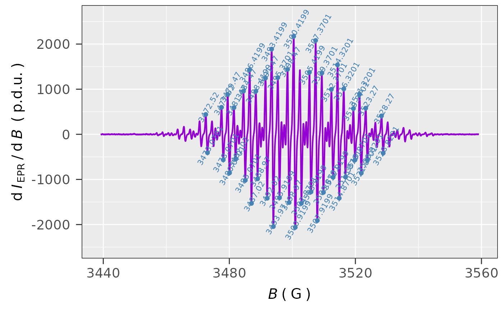

The peak picking expands the functionality of the basic eval_extremeX_Spec to quickly
find extremes within several regions of the entire EPR/ENDOR Spectrum (without a need for an
interactive plotting). The function is based on the findpeaks to find
the local intensity maxima and/or minima by fitting the experimental EPR spectral parts/points using the shortened
vertex form of a parabola.
The parabola vertices actually represent the maxima or minima. Visualization of the peak picking is provided
by the plot_EPR_Specs together with the geom_text function (see the geom_label).
Usage
eval_peakPick_Spec(
data.spectr,
x = "B_mT",
x.unit = "mT",
xlim = NULL,
Intensity = "dIepr_over_dB",
Ilim = NULL,
lineSpecs.form = "derivative",
only.peak.pn = NULL,
min.peak.height = NULL,
min.peak.dist = NULL,
min.peak.width = 1,
max.peak.width = Inf,
double.sided = TRUE,
line.color = "darkviolet",
peak.color = "steelblue",
peak.text.angle = 90,
peak.text.size = 3,
peak.point.size = 2,
peak.point.shape = 16,
peak.text.overlap = FALSE,
...
)Arguments
- data.spectr
Data frame object/table, containing
x-values and theIntensity(see the arguments below), from which the peaks are to be found (picked).- x
Character string, pointing to \(x\)-axis/column quantity header in the original
data.spectrlike magnetic flux density \(B\), \(g\)-Value or \(RF\) (radio frequency), default:x = "B_mT".- x.unit
Character string, pointing to unit of
x-quantity coming from the originaldata.spectra. Units like"G"(Gauss),"mT"(millitesla),"T"(tesla),"MHz"(megahertz in case of ENDOR spectra) or"Unitless"/"unitless"(in case of \(g\)-values) can be used. Default:x.unit = "mT".- xlim
Numeric vector, referring to lower and upper limit of the selected \(x\)-region, e.g.
xlim = c(3495.4,3595.4)(\(B\) inG) orxlim = c(12.5,21.2)(\(RF\) inMHz) orxlim = c(2.004,2.001)(dimensionless \(g\)). Default:xlim = NULL(actually corresponding to the entire \(x\)-range).- Intensity
Character string, pointing to
intensity columnname in the originaldata.spectrif other thandIepr_over_dBname/label is used (e.g. for simulated or integrated spectra), default:Intesity = "dIepr_over_dB".- Ilim
Numeric vector, corresponding to visualization limits of the selected
y/Intensityregion, e.g.Ilim = c(-2e-3,2e-3). Default:Ilim = NULL(actually corresponding to the entire Intensity range).- lineSpecs.form
Character string, describing either
"derivative"(default) or"integrated"(in such case also"absorption"can be used) line form of the analyzed EPR spectrum/data.- only.peak.pn
Character string, setting up the selection of positive (
Intenstity> 0) and/or negative (Intensity< 0) peaks (in the case oflineSpecs.form = "derivative") or only positive ones (in the case oflineSpecs.form = "integrated"orlineSpeccs.form = "absorption"). Default:only.peak.pn = NULL, corresponding to automatic selection of positive/negative peaks depending onlineSpecs.form. In addition toonly.peak.pn = "positive"andonly.peak.pn = "negative"strings, the short code likeonly.peak.pn = "p"(or"P") andonly.peak.pn = "n"(or"N") can be applied as well.- min.peak.height
Numeric, setting the
Intensitythreshold (its absolute value) in order to filter/select only those intensity values, which are taken to find to maxima and/or minima. Default:min.peak.height = NULL, corresponding to \(20\,\%\) of the maximum Intensity value.- min.peak.dist
Numeric (integer > 0), pointing to minimum distance (in points) between the expected peaks, which are constructed by parabola fits over the points. For such purpose, the shortened (vertex) parabola (the 2nd polynomial) expression like \(a\,(x - h)^2 + k\) is applied, where \(a\) and \(h,k\) denote the concavity and the vertex, respectively. These vertices actually correspond to peak maxima (\(a < 0\)) or minima (\(a > 0\)). Peaks separated by less than this distance are considered as a single peak. Please, also refer to documentation of the
findpeaksfunction. The default distance (min.peak.dist = NULL) actually equals to one-half divided by the distance between the adjacent points, rounded to the integer: e.g. $$round(0.5\,/\,(x_2 - x_1))$$ where such formula corresponds toround(0.5/(data.spectr[[x]][2] - data.spectr[[x]][1])). This is especially useful for rather noisy EPR spectra or spectra with high resolution. If according to{ggplot2}graphical representation the peak picking fails, i.e. not all peaks are properly detected, try lower values than the default one (such as 1 or 4 or ...etc.).- min.peak.width
Numeric (integer > 0), setting the minimum peak-width (points) to fit the vertex parabola expression (see also the
min.peak.distargument and thefindpeaksdocumentation) to find the peaks. Default:min.peak.width = 1.- max.peak.width
Numeric (integer > 0), pointing to maximum peak-width (points) to find the peaks. Default:
max.peak.width = Inf(infinity).- double.sided
Logical. Should be the peaks found for both intensity sites (
data.spectr[[Intensity]]> 0 as well asdata.spectr[[Intensity]]< 0)? IflineSpecs.form = "derivative"thendouble.sided = TRUE, default, otherwise, for the single integrated EPR spectra, it appliesdouble.sided = FALSE.- line.color
Character string, line color to plot the EPR/ENDOR spectrum. All
{ggplot2}colors are available (see alsoaes_colour_fill_alpha). Default:line.color = "darkviolet".- peak.color
Character string, "point" color to visualize/emphasize the peaks. Similarly, as for the
line.colorargument, all{ggplot2}color definitions are available. Default:peak.color = "steelblue".- peak.text.angle
Numeric, setting the angle (in deg) of the peak value (projection onto the \(x\)-axis) annotation text, presented near the local maximum or minimum, and measured relatively to the \(x\)-axis (see also
geom_text). Default:peak.text.angle = 90.- peak.text.size
Numeric, pointing to peak annotation text size (in mm, see the
aes_linetype_size_shape). Default:peak.text.size = 3.- peak.point.size
Numeric, size (in mm) of the peak "point" in graphical representation of the peak picking. Please consult the
aes_linetype_size_shape{ggplot2}aesthetic arguments. Default:peak.point.size = 2.- peak.point.shape
Numeric (integer between 0 and 24), controlling the "point" symbol like square, triangle, circle, asterisk...etc, refer to e.g.
{ggplot2}aesthetic specifications. Default:peak.point.shape = 16(filled circle).- peak.text.overlap
Logical, if
TRUE, the overlapping peak text annotation to a previous one, will be not displayed, for clarity (see alsogeom_label). Ifpeak.text.overlap = FALSE(default), all found peaks are presented with their corresponding values (text annotations).- ...
additional arguments specified, please refer to the
plot_EPR_Specsfunction, in order to customize the graphical output.
Value
List, consisting of following components, will be returned:
- df
Data frame, corresponding to the original
data.spectr, with all peaks (Intensityvsx) found byfindpeaksalgorithm and the arguments defined above.- plot
Graphical representation of found peaks in the EPR/ENDOR spectrum.
See also
Other Evaluations:
eval_DeltaXpp_Spec(),
eval_FWHMx_Spec(),
eval_extremeX_Spec(),
eval_gFactor(),
eval_gFactor_Spec(),
eval_interval_cnfd_tVec(),
eval_kinR_Eyring_GHS(),
eval_nu_ENDOR()
Examples
## loading TMPD built-in example file:
tmpd.data.file.path <-
load_data_example(file = "TMPD_specelchem_accu_b.asc")
## reading data:
tmpd.data.file <-
readEPR_Exp_Specs(path_to_ASC = tmpd.data.file.path,
col.names = c("B_G",
"dIepr_over_dB"),
qValue = 3500,
norm.vec.add = 20,
origin = "winepr")
#
## peak picking of only positive (Intensitity > 0)
## peaks in the derivative EPR spectrum of TMPD:
tmpd.peak.pick.01 <-
eval_peakPick_Spec(data.spectr = tmpd.data.file,
only.peak.pn = "p",
min.peak.dist = 1)
#
## peak picking visualization:
tmpd.peak.pick.01$plot
#
## found peaks data frame preview
tmpd.peak.pick.01$df
#> B_mT dIepr_over_dB
#> 1 347.252 440.04677
#> 2 347.752 598.15606
#> 3 347.947 885.78057
#> 4 348.147 592.27811
#> 5 348.447 955.23057
#> 6 348.642 1429.66263
#> 7 348.842 955.70051
#> 8 349.147 1245.92903
#> 9 349.342 1889.22537
#> 10 349.537 1257.70640
#> 11 349.847 1440.42926
#> 12 350.042 2171.17074
#> 13 350.242 1424.77269
#> 14 350.542 1375.81314
#> 15 350.737 2079.57646
#> 16 350.937 1359.29303
#> 17 351.237 996.85223
#> 18 351.432 1538.72091
#> 19 351.632 1007.41737
#> 20 351.937 570.59091
#> 21 352.132 886.42989
#> 22 352.327 579.94800
#
## peak picking in 'G' (not in default 'mT')
## of both positive as well as negative intensities
## with the intensity threshold 15% of the maximum,
## peaks annotation text angle 60 deg:
tmpd.peak.pick.02 <-
eval_peakPick_Spec(
data.spectr = tmpd.data.file,
x = "B_G",
x.unit = "G",
min.peak.height =
0.15 * max(tmpd.data.file$dIepr_over_dB),
peak.text.angle = 60
)
#
## graph/EPR spectrum peaks preview:
tmpd.peak.pick.02$plot
